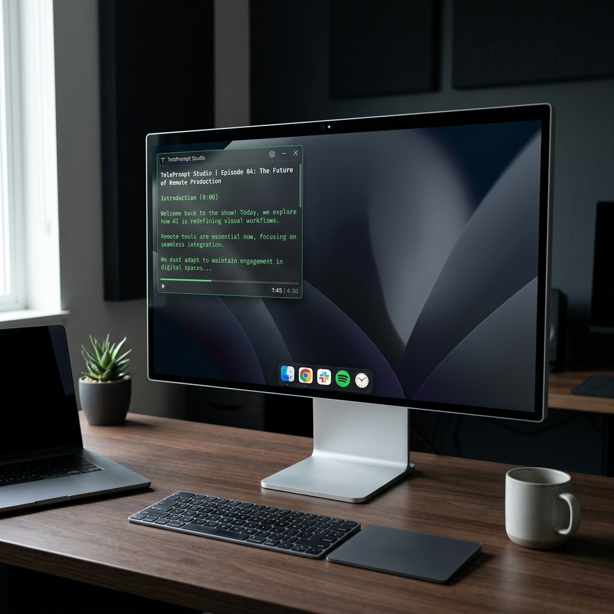

TelePrompt Studio is a professional, always-on-top floating teleprompter overlay designed to sit right next to your webcam lens. Read scripts naturally without losing audience connection.

A suite of features engineered to make your video recordings, presentations, and webinars look seamless.
Scrolling powered by requestAnimationFrame for sub-pixel accuracy and seamless movement at any speed (including fractional speeds like 0.5×).
Frameless window that stays anchored on top of all other apps, including OBS, Teams, Zoom, or PowerPoint, without stealing focus.
Tweak opacity from 10% to 100% so you can overlay the script directly over your camera preview to verify framing while reading.
Horizontal mirror flip support allows you to use standard beamsplitter glass and professional teleprompter rigs with ease.
Manage playback, speed adjustments, and file loaders system-wide, even when focus is on another slideshow or tool.
Your window coordinates, dimensions, scroll rate, colors, alignment, padding, and text families are saved automatically between app runs.
Control the prompter hands-free. These keys work system-wide even when the window is not active.
| Action | Hotkey | Description |
|---|---|---|
| Play / Pause | Space | Toggles script auto-scrolling on or off |
| Restart & Countdown | R | Resets to the beginning and runs a 3-2-1 countdown |
| Stop & Reset | S | Stops the scroller and snaps back to starting position |
| Increase Speed | ↑ Arrow | Speeds up the scroll by 0.5× (max 10.0×) |
| Decrease Speed | ↓ Arrow | Slows down the scroll by 0.5× (min 0.1×) |
| Load Text File | Ctrl + O | Opens file explorer to load a .txt script |
| Return to Editor | Escape | Exits teleprompter view back to script editor |
Choose your platform and download the latest release of TelePrompt Studio. Start recording professional videos today.